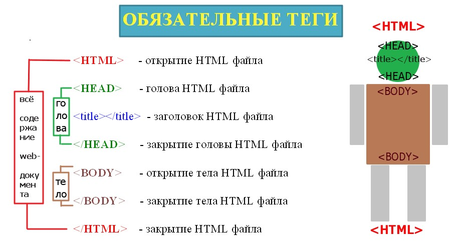
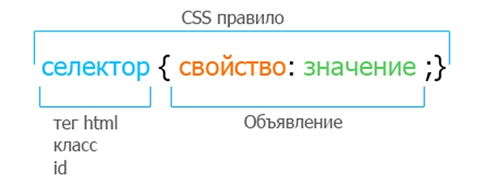
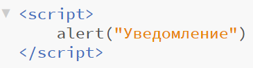

Для начала стоит разобрать что означает web-программирование. Если говорить простым языком это все что вы можете встретить в интернете, все сайты, с которыми вы когда-либо сталкивались (и этот в том числе) являются web-приложениями, а люди, делающие эти сайты - web-разработчики.
Вся Web-разработка делится на 2 вида: Fronted и Backend.
Fronted - это лицевая часть сайта, все что мы видим и выполняем в самом браузере. Люди занимающиеся этим зовутся Fronted-разработчики, в их задачи входит настроить и оформить сайт таким образом, чтоб он корректно отображался на всех устройствах, все кнопки исправно выполняли свои функции и все это выглядело прилично. Для всего этого fronted-разработчики используют: HTML, CSS и JavaScript.
Backend - это внутренняя часть сайта, находящаяся на сервере и скрытая от обычных пользователей, в ней производится работа с базой данных и обработка данных пользователя. Задача backend-разработчика с помощью языка программирования написать сайт так, чтобы пользователь мог спокойно совершать такие действия как: покупки на сайтах, просмотр видео, комментирование различных записей и т.д., а также backend-разработчики обеспечивают защиту данных пользователя от злоумышленников и поддерживают исправную работу сайта при большом количестве пользователей.
Также есть люди, которые сами занимаюся всем вышеперечисленным - Fullstack-разработчики, настоящие профессионалы своего дела, знающие и делающие множество вещей одновременно.
HTML(HyperText Markup Language) - язык гипертекстовой разметки, это основной язык, с помощь которого создается "скелет" сайта. Создается "скелет" в файле с расширением .html с помощью тегов - это основные слова в языке HTML, с помощь которых описывается текст сайта, теги пишутся в угловых скобках и чаще всего их употребляют парами, поэтому есть открывающие и закрывающие теги. У некоторых тегов также могут присутсвовать атрибуты, расширяющие возможность тегов. HTML-документ должен обязательно содержать в себе следующие теги:
CSS(Cascading Style Sheets) - каскадные таблицы стилей. Это язык созданый для оформления HTML-документа. Состоит этот язык из селекторов - специальные метки, отсылающие каким именно элементам нужно придать свойства, используются они с фигурнами скобками, в которых написаны свойства, которые надо придать тексту.
Css код можно прописывать сразу в нужном элементе с помощью атрибута STYLE, при этом фигурные скобки не употребляются.

Или же можно создать нофый фаил с расширением .css и в нем с помощь селекторов придавать свойства элементам HTML-документа
JavaScript(JS) - Это язык программирования, который придает интарактивность web-страницам. Код JS как и CSS можно прописать в нужном элементе HTML-документа с помощью тега script, например с помощью alert при переходе на наш сайт пользователь увидет уведомление.

Backed-разработчику для работы необходимо знать хотябы один язык программирования. Всего языков множество отличающихся друг от друга каждый в чём-то лучше или хуже другого. Для начала нужно проализировать частоиспользуемые языки, чтобы понять какой удобней использовать Вам.
Вот пример самых популярных языков программирования.
Один из самых популярных языков программирования. Он универсален и используется уже более 20 лет.
С помощью Java можно выполнять множество задач, например:
Отличный язык для начинающих, несложный в изучении и при этом способен выполнять различные сложные задачи.
С помощью этого языка Вы можете:
Очень популярный язык программирования, используется как для web-разработки, так и для создавания настольных приложений.
Python используют для: